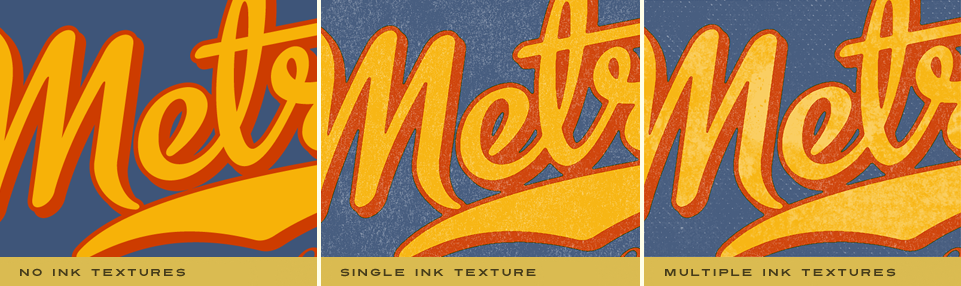
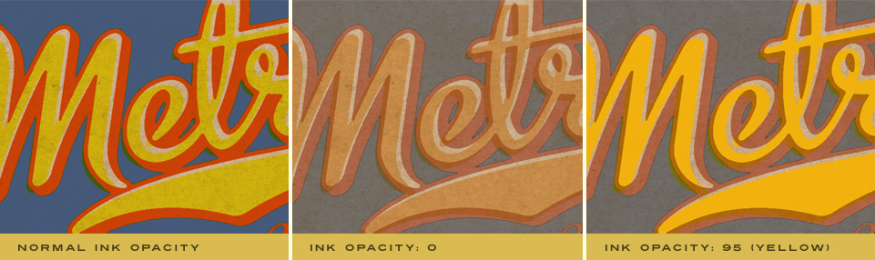

Let's Learn About Permanent Press 2
Ink Settings
Once you've defined the Prepress settings, take your image to a whole new level of realism with fulll control over your ink! Apply a convincing authentic ink texture, adjust the ink viscocity or fine-tune each inks opacity.

|
Select an Ink Texture
- Choose an Ink Texture - Simply click the Choose button to launch the Ink Texture Picker. As you click on each ink texture, you will see it update the image in the preview window in realtime. To see a quick preview of all the textures in color, simply click the eyeball icon along the bottom to toggle this view. Click the arrow icons along the top of the picker to see more ink texture options.
Once you've selected the desired ink texture you'd like to use, you can proceed to fine-tune using the controls defined below. Additionally, you can select a different texture effect at any time and your current settings will be applied to the new ink texture.

|
Adjust the Ink Properties
We've given you the ability to modify the characteristics of the ink for even more versatility and realism.
- Texture Scale - Using the slider control, enlarge or reduce the scale of the selected texture effect appropriate to the resolution of the image or simply enter a number in the text entry field to the right.
- Texture Intensity - You may intensify or fade the ink texture effect by moving the slider control or by simply entering a number in the text entry field to the right.
- Texture Contrast - Increase or decrease the overall ink texture contrast by moving the slider control or by simply entering a number in the text entry field to the right.
- Ink Texture Offset - Using the slider control, you can easily offset all ink textures applied to your image to create a more authentic and natural printed look.
Adjust the Ink Texture Coverage
Take control of your ink and create a more realistic printed effect by appling the ink texture only in certain areas of your image with our powerful Coverage controls.
- Coverage - Use the slider control to modify the areas of your design you wish to apply the ink texture effect to. The Coverage slider is set to 100 by default to apply the ink texture effect to the entire ink plate. As the coverage amount is decreased, random gaps between the ink texture will appear.
- Coverage Scale - Once the Coverage slider has been decreased, the Coverage Scale control will become enabled. Adjust the Coverage Scale slider to any amount below 100 and the size of the visible patches in the ink texture effect will be decreased accordingly.
- Random Button - Use the Random button to modify the position and shape of the patches created by the reduced coverage area when enabled. Either click on the Random button to generate a random number or manually type any number in the text entry field you wish to use.
Apply Ink Texture Settings Globally
Check the Apply Ink Texture Globally checkbox to apply your settings to all ink plates simultaneously. Or, simply leave unchecked and adjust each ink plate individually if you wish to apply a unique combination of settings to each individual ink plate. Combine multiple ink texture effects or alternate each ink plate with and without ink textures for a more original look.

Adjust the Ink Viscosity
Below the Ink Texture Coverage dialog is the Ink Viscosity dialog which defines how wet the ink is. Wetter ink will spread and drier thicker ink will result in less coverage. You'll also notice there is an Apply Ink Viscocity Globally checkbox which allows you to apply the same settings to ALL ink plates rather just the one you're working with.

In the example just above in the center, you can see how the viscosity has been applied globally to all ink plates resulting in a loss of detail and an increase in overprinted Ink. If we look just to the right, we've only modified the viscosity of a single ink plate (Blue) while leaving the remaining ink plates intact.
Adjust the Ink Opacity
Below the Ink Viscosity dialog is the Ink Opacity dialog which defines how opaque the ink is. Transparent ink will reveal more of the paper or surface below and more opaque ink will be brighter than the paper or surface beneath. You'll also notice there is an Apply Ink Opacity Setting Globally checkbox just beneath which allows you to apply the same settings to ALL ink plates rather just the one you're working with.

Working with the Preview Window
- Preview Options - Above the preview window at left, you'll notice some viewing options. By default the Composite option is selected to show you what all combined tabbed section effects look like applied to the image. You'll also notice the Current Ink option which will show you the specific ink plate you're working with. Use the Ink Plate Selector to change the ink plate you wish to view. At any time you can click the Original option to toggle between the unaffected image and a preview of the filtered image with all effects applied.
- Reset - Reset is located above the preview window on the right. When clicked, it will reset all Ink effect controls to their default state.
- Magnifying the Preview - Below the preview window, you'll see the magnification controls. By clicking the appropriate icon (- or +), you can decrease or increase the magnification of the preview window. The current level of magnification is shown between the magnification icons. If you prefer keyboard shortcuts, you can simply hold down the Command (Apple) key (or the Ctrl key on Windows) then press the plus sign (+) or the minus sign (-) respectively to zoom in or out of your image.
Pro Tip - Adobe Photoshop users may use keyboard shortcuts to instantly change the zoom magnification. To fit the full image within the preview window, simply hold down the Command (Apple) key (or the Ctrl key on Windows) then press the number zero (0) on the keyboard. To view the image at 100% size, hold down the Command (Apple) key (or the Ctrl key on Windows) then press the number one (1) on the keyboard. - Moving the Preview - When you have increased magnification and wish to view the texture effect on the rest of the image not visible in the preview window, simply move your mouse into the preview window and click and drag your image around to reveal the effect on your image.
- Re-positioning ink plates - To modify the position of an ink plate on your image, hold down the Command (Apple) key (or the Ctrl key on Windows) then click and drag within the preview window to reposition the center of the effect. You can change which ink plate you're repositioning via any ink plate selector dialog along the top of the plug-in.